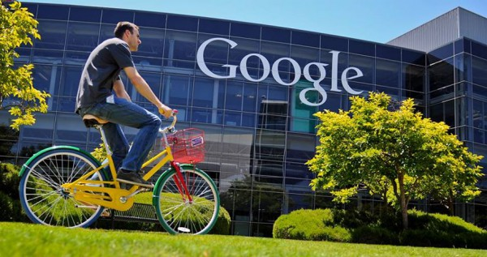

Інформація щодо біткоінів
Bitcoin також Біткойн — електронна валюта, концепт якої був озвучений 2008 року Сатосі Накамото, і представлений ним 2009 року, базується на самоопублікованому документі Сатосі Накамото. Повна капіталізація ринку біткойнів наразі становить 7,865,298,695 USD (5,742,527,794 EUR). Середня ціна одного біткойна на 6 серпня 2016 року — 13755 ₴ або 573.94 $.Bitcoin не має централізованого управління та емітентів. Транзакції із цифровим підписом між двома вузлами передаються до всіх вузлів peer-to-peer мережі, а самі дані про переміщення коштів зберігаються у розподіленій базі даних.
Читать далее

Ситуація на Wall Street
Напад 11 вересня 2001 року привів до падіння ділової активності в районі, і в результаті великі компанії почали переїжджати в інші райони міста, а також в сусідні штати і інші ділові центри Америки, такі як Чикаго і Бостон.Безпосередньо Уолл-стрит і Фінансовий Район загалом переповнені хмарочосами за будь-якими стандартами. Втрата Всесвітнього Торгового Центру, як не дивно, прискорила розвиток у Фінансовому Районі. Це відбулося зокрема завдяки податковим стимулам, забезпеченим федеральним урядом, урядами штату і міста, заохочуючи відновлення району і його розвиток.
Читать далее
"Прокурор"взяв хабаря
У обласному центрі працівники Служби безпеки України затримали на отриманні хабара прокурора Кіровоградської місцевої прокуратури. Про це сайту DOZOR повідомили у відомстві.За інформацією, прокурор був процесуальним керівником в одному з кримінальних проваджень. За його закриття зловмисник вимагав від приватного підприємця десять тисяч доларів. Оперативники затримали зловмисника під час отримання всієї суми хабара.Наразі за даним фактом відкрито кримінальне провадження за ч. 3 ст. 368 Кримінального кодексу України.
Читать далее
Очищення банківської системи
«Очищення банківської системи», про яку любить говорити глава НБУ Валерія Гонтарєва, ще далеко не закінчена. У декількох банках присутні серйозні проблеми, що загрожують фінустановам банкрутством і виведенням з ринку. Про трьох з них варто згадати докладніше.
Читать далее

Новий офіс Google
Нинішня штаб-квартира Google в Кремнієвій долині - Googleplex - це цілий міні-квартал з кафе, закусочними та місцями для відпочинку. Але у нього є один недолік - Google не проектував його «з нуля», а тільки пристосувала для власних цілей.У новий офіс Google кожен п'ятий буде приїжджати на велосипеді.У новий офіс Google кожен п'ятий буде приїжджати на велосипеді.Тому з минулого року найнята Google архітектурна фірма NBBJ працює над проектом нового кампусу - футуристичного комплексу Bay View поруч із затокою Сан-Франциско. Мета- побудувати офіс майбутнього, використовуючи найсучасніші технології.Кампус Bay View задуманий як 9 окремих, але в той же час взаємопов'язаних корпусів зігнутої форми. Загальна внутрішня площа будівель - близько 100 000 кв.
Читать далее

Комп'ютери багатьох країн піддалися атакам вірусу
Сьогодні в Мережі почали з'являтися повідомлення про те, що у внутрішній комп'ютерній системі МВС бушує вірус-вимагач, шифрує дані і вимагає грошей за розшифровщик. Якщо не купити «відмичку» в зазначений термін, вірус просто стирає всі дані з комп'ютера. Неназвані джерела Газети.ру стверджують, що зараження потихеньку набуває масового характеру - вже постраждали комп'ютери Липецької, Пензенської, Калузької МВС. Фахівці відзначають, що вірус називається WannaCry і просить за розблокування 300 доларів.
Читать далее